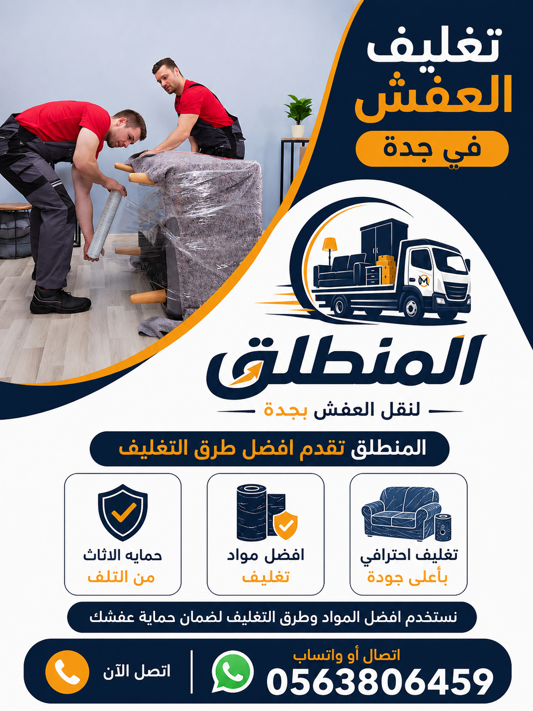

أفضل شركة تغليف عفش بجدة – نقدم خدمة تغليف الأثاث باستخدام أحدث مواد التغليف الاحترافية لحماية عفشك من الخدوش والكسر. نوفر تغليف العفش قبل النقل مع خدمات الفك والتركيب والنقل الآمن. شركة المنطلق لنقل العفش هي خيارك الأمثل.
هل تبحث عن شركة تغليف عفش في جدة بأسعار مناسبة وخدمة موثوقة؟ شركة المنطلق لنقل العفش هي الحل الأمثل. نحن نقدم خدمة تغليف الأثاث في جدة باستخدام أحدث مواد التغليف الاحترافية مثل البلاستيك الفقاعي والكرتون المقوى والزوايا البلاستيكية. تغليف العفش قبل النقل هو خطوة أساسية لحماية أثاثك من الخدوش والكسر والغبار. فريقنا من العمالة المدربة يقوم بتغليف كل قطعة على حدة بدقة واحترافية. نحن نعد أرخص شركة تغليف عفش بجدة بدون المساس بجودة الخدمة. نغطي جميع أحياء جدة: شمال جدة (الموز، الأندلس، الربيع)، جنوب جدة (غليل، البوادي، اليمن)، شرق جدة (مشرفة، السلامة، النعيم)، وغرب جدة (الشاطئ، المرجان، البغدادية الغربية). يمكنك زيارة صفحة من نحن للتعرف على تاريخنا الطويل في مجال تغليف ونقل العفش. بالإضافة إلى ذلك، نوفر خدمة نقل العفش في جدة المدمجة مع التغليف بأسعار تنافسية. نحن ندرك أن الأثاث يمثل استثماراً كبيراً، لذلك نحرص على توفير أقصى درجات الحماية. عند الاتصال بنا، سيتم إرسال مندوب لتقييم كمية العفش وتحديد المواد المناسبة للتغليف. نحن نستخدم مواد صديقة للبيئة وقابلة لإعادة التدوير. جميع فرقنا مدربة على تقنيات التغليف العالمية. شركة المنطلق تضع خبرتها بين يديك. اتصل على 0563806459 للحصول على معاينة مجانية وسعر فوري.

في شركة المنطلق، نستخدم أفضل مواد تغليف العفش في جدة لضمان حماية فائقة لأثاثك. أولاً، البلاستيك الفقاعي (بابل راب) هو المادة الأساسية المستخدمة لحماية الأجهزة الإلكترونية والزجاج والمرايا. ثانياً، الكرتون المقوى يستخدم لتغليف القطع الصغيرة واللوحات الفنية. ثالثاً، الزوايا البلاستيكية تحمي أرجل وزوايا الكنب والمجالس. رابعاً، الأغطية القماشية تستخدم لتغليف الأثاث الكبير مثل غرف النوم والمطابخ. خامساً، النايلون الشفاف السميك يستخدم لتغليف المراتب والوسائد. يمكنك الاطلاع على تفاصيل مواد التغليف عبر صفحة تغليف العفش في جدة. جميع هذه المواد متوفرة لدينا بكميات كبيرة لضمان سرعة إنجاز المهمة. نستخدم أيضاً أشرطة لاصقة عالية التحمل لتثبيت مواد التغليف بشكل محكم. نحن نحرص على أن تكون جميع المواد المستخدمة صديقة للبيئة وقابلة لإعادة التدوير. تغليف العفش مع النقل هو حزمة متكاملة نقدمها بأسعار خاصة. إذا كنت تبحث عن مدونتنا، ستجد مقالات مفيدة حول أفضل أنواع مواد التغليف. نحن نضمن لك وصول أثاثك سليماً بدون خدوش أو كسور بفضل جودة موادنا وخبرة فريقنا. اتصل بنا اليوم لتحصل على استشارة مجانية حول أفضل المواد المناسبة لعفشك.
تغليف غرف النوم من أكثر الخدمات طلباً في شركة المنطلق. غرف النوم تحتوي على قطع كبيرة مثل الأسرة والدواليب والخزائن والتساريح، وجميعها معرضة للخدوش والكسر أثناء النقل. نقوم بتفكيك غرفة النوم بالكامل بواسطة نجارين متخصصين، ثم نغلف كل لوح على حدة باستخدام البلاستيك الفقاعي والكرتون المقوى. الأدراج والمفصلات يتم تغليفها بشكل منفصل ووضعها في كراتين مخصصة. المرايا الكبيرة الموجودة على خزائن الدولاب يتم تغليفها بطبقتين من الفوم والكرتون. لمزيد من التفاصيل، تفضل بزيارة صفحة فك وتركيب العفش في جدة. بعد الانتهاء من التغليف، نقوم بوضع القطع في صناديق كبيرة أو نقلها مباشرة إلى سيارة نقل العفش. نحن نستخدم زوايا بلاستيكية خاصة لحماية أطراف الألواح الخشبية. سعر تغليف غرفة نوم كاملة يبدأ من 200 ريال، ويشمل الفك والتغليف والتركيب. ننصح جميع عملائنا في جدة بالاستعانة بخدمة التغليف حتى لو كان النقل لمسافة قصيرة. اتصل بنا لحجز خدمة تغليف غرف النوم.
الكنب والمجالس هي قطع الأثاث الأكثر عرضة للاتساخ والتمزق أثناء النقل. لذلك، نوفر في شركة المنطلق خدمة تغليف الكنب والمجالس في جدة باستخدام أغطية قماشية سميكة مقاومة للماء والتمزق. نقوم بلف كل قطعة كنب على حدة، مع وضع طبقة من البلاستيك الفقاعي بين القطع المتجاورة لمنع الاحتكاك. المجالس الكبيرة ذات الأرجل الخشبية نقوم بتفكيك الأرجل وتغليفها بشكل منفصل. نستخدم أيضاً الزوايا البلاستيكية لحماية زوايا المجالس الخشبية. يمكنك الاطلاع على خدمة تغليف العفش مع النقل للحصول على عرض سعر شامل. تخزين العفش في جدة يتطلب أيضاً تغليفاً احترافياً للكنب لحمايته من الغبار والحشرات. أسعار تغليف الكنب تبدأ من 50 ريالاً للقطعة الواحدة، وتشمل الغطاء القماشي الخارجي. نحن نتعامل مع جميع أنواع الكنب (كلاسيك، زاوية، حديث، جلد، قماش). فريقنا يعرف كيفية التعامل مع الكنب الجلدي الذي يتطلب تغليفاً خاصاً لمنع التشققات. صفحة خدماتنا تشرح بالتفصيل طرق تغليف المجالس العربية. اتصل بنا اليوم لحماية أثاثك الفاخر.
تعتبر المطابخ من أصعب الأماكن في المنزل من حيث التغليف بسبب كثرة الأدراج والخزائن والأجهزة المدمجة والرخام. في شركة المنطلق، نقدم خدمة تغليف المطابخ في جدة بواسطة نجارين متخصصين. نقوم أولاً بفك جميع الخزائن العلوية والسفلية، وتفكيك الأدراج والمفصلات، ثم نغلف كل قطعة على حدة باستخدام البلاستيك الفقاعي والكرتون. الرخام يتم تغليفه بشكل خاص باستخدام فوم سميك وزوايا خشبية لحمايته من الكسر. ننصح بقراءة مدونة فك وتركيب الأثاث للحصول على نصائح إضافية. بعد التغليف، نقوم بنقل الأجزاء إلى المطبخ الجديد وإعادة تركيبها بنفس الترتيب. أسعار تغليف مطبخ صغير تبدأ من 300 ريال، وتشمل الفك والتغليف والتركيب. نحن نستخدم أقلام تلوين لترقيم الأجزاء لتسهيل عملية التركيب. أفضل شركة نقل أثاث بجدة تقدم لك خدمة متكاملة للمطابخ. تأكد من أن المطبخ هو أكثر الأماكن التي تحتاج إلى تغليف احترافي، لأن أي خطأ قد يؤدي إلى تلف الخزائن أو كسر الرخام. اتصل بنا لمعرفة التفاصيل.
الأجهزة الكهربائية هي الأكثر حساسية وتحتاج إلى تغليف خاص لحمايتها من الصدمات. في شركة المنطلق، نستخدم صناديق كرتون أصلية أو مطابقة الحجم مع حشوات فوم سميكة لتغليف الثلاجات والغسالات والمكيفات والشاشات والأفران. تغليف الشاشات يتم بطبقتين من البلاستيك الفقاعي وصندوق كرتون مقوى مع كتابة عبارة "هش" على الصندوق. تغليف الثلاجات يتطلب تفريغها من الطعام وتركها لتذويب الثلج ثم تغليفها بالكامل. تغليف الغسالات يتم مع تثبيت الحوض الداخلي لمنع تحركه. يمكنك الاطلاع على الصفحة الرئيسية لمزيد من العروض. ننصح أيضاً بقراءة مدونة دينا نقل العفش لمعرفة كيفية نقل الأجهزة بعد التغليف. أسعار تغليف الأجهزة الكهربائية تبدأ من 30 ريالاً للجهاز الصغير (ميكروويف) وتصل إلى 100 ريال للثلاجة الكبيرة. نحن نضمن وصول جميع أجهزتك سليمة تماماً. تواصل معنا لحجز خدمة تغليف الأجهزة الكهربائية.
الزجاج والمرايا والتحف هي الأكثر عرضة للكسر. لذلك، نقدم في شركة المنطلق خدمة تغليف الزجاج والمرايا والتحف في جدة باستخدام فوم عازل بسمك 5 سم وصناديق خشبية أو كرتونية مخصصة. نقوم بتغليف كل لوحة زجاج أو مرآة بطبقتين من البلاستيك الفقاعي، ثم نضيف زوايا كرتونية على الأطراف، ثم نضعها في صندوق خاص مكتوب عليه "زجاج - هش". التحف والأنتيكات يتم تغليفها بشكل فردي باستخدام فوم ناعم ثم توضع في صناديق صغيرة مع حشوات داخلية. يمكنك قراءة المزيد عن خدماتنا عبر صفحة خدماتنا. تخزين العفش في جدة يتطلب أيضاً تغليفاً احترافياً للزجاج والتحف. ننصح العملاء بتصوير القطع الزجاجية الثمينة قبل التغليف للتوثيق. أسعار تغليف المرآة الواحدة تبدأ من 40 ريالاً. نحن نضمن وصول جميع القطع الزجاجية والتحف سليمة بفضل خبرتنا الطويلة في هذا المجال. اتصل بنا اليوم لتحصل على أفضل خدمة تغليف للزجاج في جدة.
نحن نقدم أسعاراً تنافسية لخدمة تغليف العفش في جدة تناسب جميع الميزانيات. الأسعار تبدأ من 100 ريال لتغليف شقة صغيرة (بدون فك وتركيب)، وتصل إلى 1500 ريال للخدمة الشاملة التي تشمل تغليف فيلا كاملة مع الفك والتركيب. الجدول التالي يوضح الأسعار التقريبية حسب نوع الخدمة. للحصول على عرض سعر دقيق يناسب حالتك الخاصة، يمكنك الاتصال بنا أو استخدام نموذج الواتساب. نقدم أيضاً خصم 15% للحجوزات التي تتم عبر صفحة اتصل بنا أو من خلال موقعنا الإلكتروني. كما نقدم عروضاً شهرية للعملاء الجدد، مثل خصم 50 ريالاً على أول خدمة تغليف. جميع الأسعار شاملة الضرائب، ولا توجد رسوم خفية. يمكنك أيضًا الاطلاع على مدونتنا للحصول على نصائح لتوفير المال عند تغليف العفش. نحن نؤمن بالشفافية الكاملة، لذلك نقوم بإرسال فاتورة مفصلة قبل بدء العمل. من نحن صفحة تشرح سياستنا في التسعير.
| نوع الخدمة | السعر التقريبي (ريال) | الوقت المتوقع |
|---|---|---|
| تغليف شقة غرفة نوم (بدون فك) | 100 - 200 | 1-2 ساعات |
| تغليف شقة 3 غرف مع فك جزئي | 300 - 500 | 3-4 ساعات |
| تغليف كنب ومجالس فقط | 150 - 300 | 1-2 ساعات |
| تغليف مطبخ كامل مع الفك والتركيب | 300 - 600 | 2-3 ساعات |
| تغليف فيلا كامل (خدمة شاملة) | 800 - 1500 | 5-7 ساعات |
| تغليف أجهزة كهربائية فقط | 50 - 200 | حسب العدد |
تتميز شركة المنطلق لتغليف العفش بالعديد من المزايا التي تجعلها الخيار الأول لسكان جدة. أولاً، لدينا فريق مدرب تدريباً عالياً على أحدث تقنيات التغليف العالمية. ثانياً، نستخدم أفضل مواد التغليف المستوردة من أوروبا وأمريكا. ثالثاً، نقدم ضماناً خطياً على سلامة الأثاث المغلف، حيث نتحمل مسؤولية أي ضرر يحدث أثناء التغليف أو النقل (مع استثناءات الحالات القاهرة). رابعاً، خدمة العملاء لدينا متاحة 24 ساعة طوال أيام الأسبوع، ويمكنك متابعة طلبك عبر الهاتف أو الواتساب. يمكنك قراءة تقييمات عملائنا السابقين على صفحة من نحن. بالإضافة إلى ذلك، نقدم عروضاً حصرية للحجوزات الجماعية وللشركات. نتمتع بسمعة طيبة في جميع أحياء جدة، ونحظى بثقة آلاف العملاء الذين استخدموا خدماتنا مراراً وتكراراً. نحن نؤمن بأن العمل الجيد هو أفضل دعاية، ولذلك نحرص على تقديم خدمة تفوق التوقعات. شركة نقل أثاث بجدة تقدم لك أفضل خدمات التغليف. لا تتردد في الاتصال بنا ومقارنة عروضنا مع أي شركة أخرى – ستجد أننا الأفضل من حيث الجودة والسعر. موقعنا الرئيسي يقدم كل التفاصيل.
نحن نقدم خدمة شاملة تجمع بين تغليف العفش وفك وتركيب الأثاث في حزمة واحدة. هذه الخدمة مثالية للعملاء الذين يمتلكون أثاثاً كبيراً يتطلب تفكيكاً قبل التغليف مثل غرف النوم، المطابخ المتكاملة، والمجالس الكبيرة. فريقنا من النجارين المدربين يستخدم أحدث الأدوات لتفكيك الأثاث بأسرع وقت دون إتلاف أي قطعة، ثم نقوم بتغليف الأجزاء المفككة بشكل فردي. بعد الوصول إلى الوجهة الجديدة، نقوم بإعادة تركيب الأثاث في مكانه الجديد بدقة متناهية. لمزيد من التفاصيل، تفضل بزيارة صفحة فك وتركيب العفش في جدة. تشمل الخدمة أيضاً فك وتركيب غرف النوم الكلاسيكية، والمطابخ الحديثة، والمكاتب الإدارية. نحن نضمن تركيب جميع القطع بشكل صحيح وثابت، مع اختبار الأدراج والمفصلات للتأكد من عملها بسلاسة. يتوفر النجارون على مدار الأسبوع، ويمكن حجزهم في نفس يوم التغليف. مدونة فك وتركيب الأثاث تقدم نصائح إضافية. أسعار الحزمة الشاملة (تغليف + فك وتركيب) تبدأ من 400 ريال للشقة الصغيرة. اتصل بنا لتحصل على نجار محترف ينضم إلى فريق التغليف.
هل تحتاج إلى تغليف عفشك للتخزين لفترة مؤقتة بسبب التجديد أو السفر؟ نحن نقدم خدمة تغليف العفش للتخزين في جدة بالتعاون مع مستودعات مجهزة بأنظمة تكييف ومراقبة كاميرات 24 ساعة. التغليف للتخزين يختلف عن التغليف للنقل، حيث يتطلب طبقات إضافية من البلاستيك الفقاعي والنايلون السميك لحماية الأثاث من الغبار والرطوبة والحشرات. بعد أن نقوم بتغليف عفشك، يمكننا تخزينه في مستودعاتنا الآمنة بأسعار رمزية تبدأ من 40 ريالاً للمتر المكعب شهرياً. يمكنك الاطلاع على تفاصيل الخدمة عبر صفحة تخزين العفش. جميع العفش المخزن يتم تغليفه بشكل احترافي مع وضع بطاقات تعريفية لكل قطعة. نحن نستخدم رفوفاً معدنية لرفع الأثاث عن الأرض لمنع الرطوبة. يمكنك استلام عفشك في أي وقت تشاء، ونعيد تغليفه إذا لزم الأمر. خدمة التغليف للتخزين متاحة للأفراد والشركات على حد سواء. اتصل بنا لمعرفة المساحة المتاحة. ننصح بتغليف الأثاث جيداً قبل التخزين لأن فترة التخزين قد تطول. شركة المنطلق تقدم لك أفضل حلول التغليف والتخزين.
قبل حجز خدمة تغليف العفش في جدة، ننصحك باتباع هذه الخطوات لضمان تجربة ناجحة. أولاً، قم بفرز وتنظيم العفش والتخلص من الأشياء التي لا تحتاجها – فهذا يقلل من عدد المواد المستخدمة ويخفض التكلفة. ثانياً، قم بتنظيف الأثاث قبل التغليف لتجنب حبس الأتربة. ثالثاً، قم بتفكيك الأثاث القابل للتفكيك بنفسك إذا كنت ترغب في توفير المال، أو اطلب خدمة النجارين لدينا. رابعاً، تأكد من أن جميع القطع الزجاجية والمرايا في مكان آمن قبل البدء. خامساً، قم بتصوير الأثاث القيم قبل التغليف للتوثيق. يمكنك قراءة المزيد من النصائح عبر مدونتنا. سادساً، احجز خدمة التغليف قبل أسبوع على الأقل في المواسم المزدحمة (مثل الصيف والإجازات). سابعاً، اسأل عن سياسة التأمين والتعويض. ثامناً، تأكد من أن فريق التغليف يستخدم مواد عالية الجودة. وأخيراً، احصل على عرض سعر مكتوب قبل بدء العمل. نحن في شركة المنطلق نلتزم بتقديم نصائح مجانية لعملائنا لمساعدتهم على اتخاذ القرار الصحيح. تعرف علينا أكثر من خلال صفحة من نحن. اتصل بنا لأي استفسار.
يبدأ من 100 ريال للشقة الصغيرة، ويزيد حسب حجم الأثاث ونوع المواد المستخدمة. اتصل للحصول على عرض دقيق.
نستخدم البلاستيك الفقاعي، الكرتون المقوى، الزوايا البلاستيكية، الأغطية القماشية، والنايلون السميك.
نعم، نوفر خدمة فك وتركيب الأثاث مع التغليف بواسطة نجارين متخصصين.
نعم، نخدم جميع أحياء جدة شمالاً وجنوباً وشرقاً وغرباً.
تستغرق من 3 إلى 5 ساعات حسب كمية الأثاث وتعقيد القطع.
نعم، نغلف الثلاجات والغسالات والمكيفات والشاشات بصناديق خاصة وفوم عازل.
نستخدم طبقتين من الفوم وصناديق خشبية للقطع الكبيرة، ونضمن وصولها سليمة.
نعم، نقدم خدمة تغليف العفش للتخزين في مستودعات آمنة بأسعار ممتازة.
جميع عمالنا مدربون على أحدث تقنيات التغليف العالمية ويحملون شهادات خبرة.
نعم، نقدم خدمة التغليف فقط إذا كنت ترغب في النقل بنفسك أو مع شركة أخرى.
نعم، نقدم ضماناً على سلامة الأثاث المغلف ضد الخدوش والكسر الناتج عن سوء التغليف.
يبدأ من 200 ريال ويشمل الفك والتغليف وإعادة التركيب.
نعم، خدمة 24 ساعة طوال أيام الأسبوع بما في ذلك الجمعة والأعياد.
نعم، معظم موادنا قابلة لإعادة التدوير ونحرص على تقليل النفايات.
اتصل على 0563806459 أو عبر الواتساب، وسنرسل فريقاً خلال ساعة.
مواد تغليف احترافية، عمالة مدربة، فك وتركيب، ونقل آمن. نخدم جميع أحياء جدة بأسعار تنافسية. شركة المنطلق تنتظر مكالمتك.